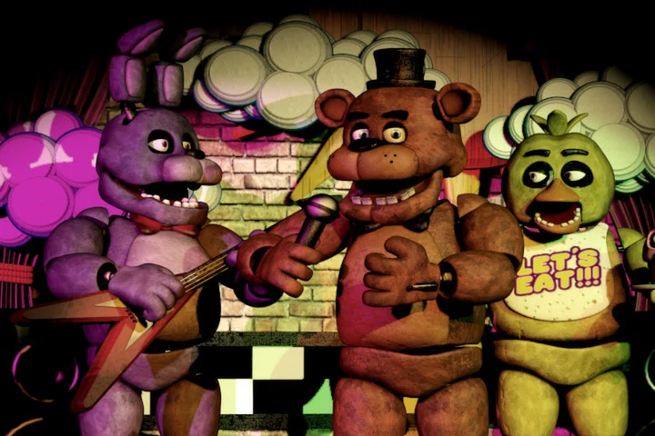

Five Nights at Freddy's (FNAF) es una serie de videojuegos de terror y suspense desarrollada por Scott Cawthon. Aquí tienes un informe completo sobre Five Nights at Freddy's:Five Nights at Freddy's (FNAF) es una serie de videojuegos de terror y suspense desarrollada por Scott Cawthon.
Premisa: En Five Nights at Freddy's, los jugadores asumen el papel de un guardia de seguridad nocturno en diferentes ubicaciones de Freddy Fazbear's Pizza, un restaurante temático similar a Chuck E. Cheese's. Los animatrónicos (robots animados) del restaurante, que incluyen a Freddy Fazbear y sus amigos, cobran vida y se vuelven hostiles durante la noche.Five Nights at Freddy's (FNAF) es una serie de videojuegos de terror y suspense desarrollada por Scott Cawthon.
Vigilancia: El juego se juega desde una perspectiva en primera persona a través de cámaras de seguridad.
Defensa: Los jugadores deben usar las cámaras y otras herramientas limitadas (como luces y puertas automáticas) para defenderse de los animatrónicos que intentan entrar a la oficina del guardia.
Tensión y Horror: FNAF se centra en la gestión del miedo y la tensión mientras los jugadores intentan sobrevivir durante cinco noches, cada una más desafiante que la anterior.
Trama Central: A lo largo de la serie, se desarrolla una trama compleja que explora el pasado oscuro de Freddy Fazbear's Pizza, incluyendo incidentes relacionados con desapariciones y sucesos sobrenaturales.
Expansión: La serie se expandió con múltiples secuelas, precuelas y spin-offs que exploran diferentes aspectos de la historia y presentan nuevos personajes y ubicaciones.
Estilo de Arte: FNAF utiliza un estilo visual simple pero efectivo, con gráficos 3D minimalistas que contribuyen a la atmósfera de horror y suspense.
Diseño de Personajes: Los animatrónicos están diseñados para ser encantadores y amigables durante el día, pero se convierten en figuras aterradoras y amenazantes durante la noche, con movimientos espeluznantes y expresiones inquietantes.
Recepción Crítica: La serie FNAF ha sido generalmente bien recibida por su originalidad, diseño de juego único y capacidad para generar miedo genuino en los jugadores.
Cultura y Fandom: FNAF ha generado una comunidad de seguidores dedicados que han creado teorías, arte, historias y mods inspirados en la serie, contribuyendo a su longevidad y relevancia cultural.
Merchandising: La popularidad de FNAF ha dado lugar a una amplia gama de productos de merchandising, incluyendo libros, cómics, figuras de acción y ropa.
Juegos Derivados: Además de los juegos principales, FNAF ha inspirado juegos derivados y experiencias interactivas en diversas plataformas.
Influencia en el Género: FNAF ha influido en el género de los juegos de terror indie, destacándose por su enfoque en la jugabilidad táctica y psicológica sobre los gráficos sofisticados.
Scott Cawthon: El creador de la serie, Scott Cawthon, se ha convertido en una figura destacada en la industria de los videojuegos independientes debido al éxito y la innovación de FNAF.